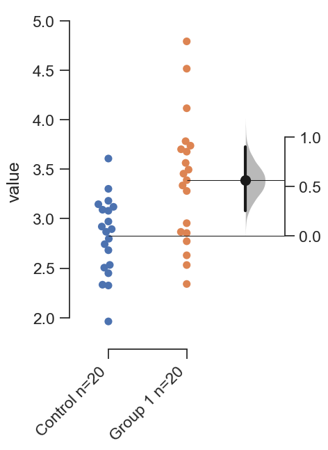
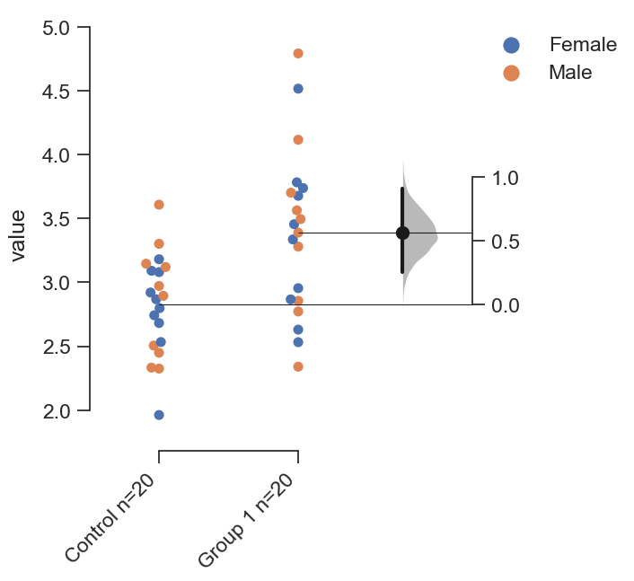
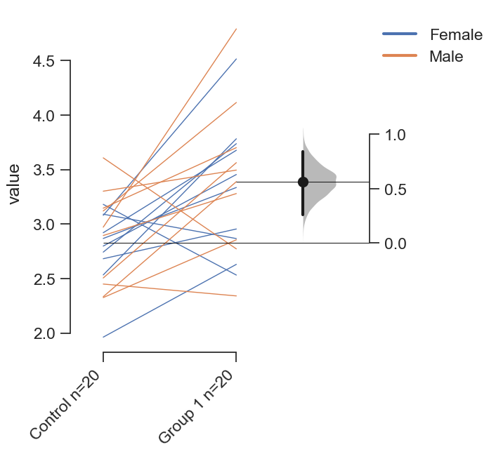
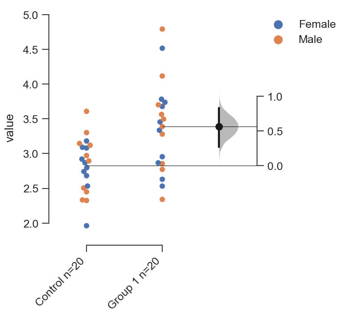
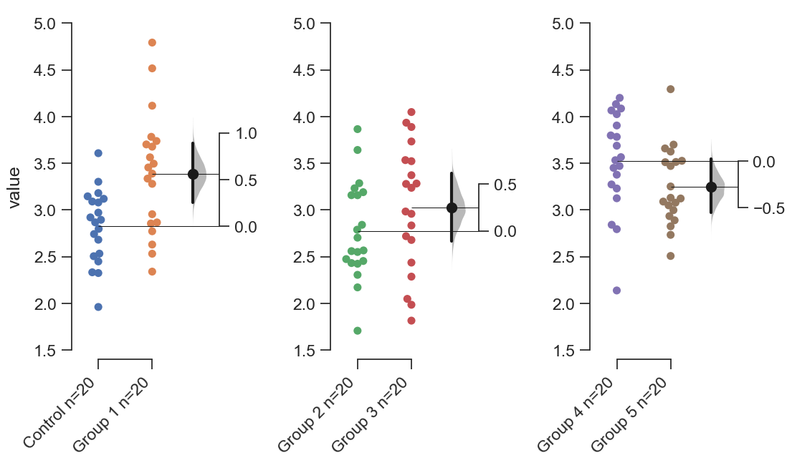
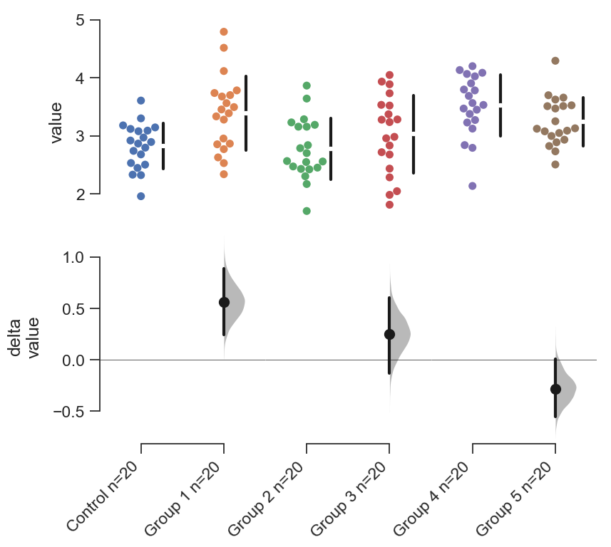
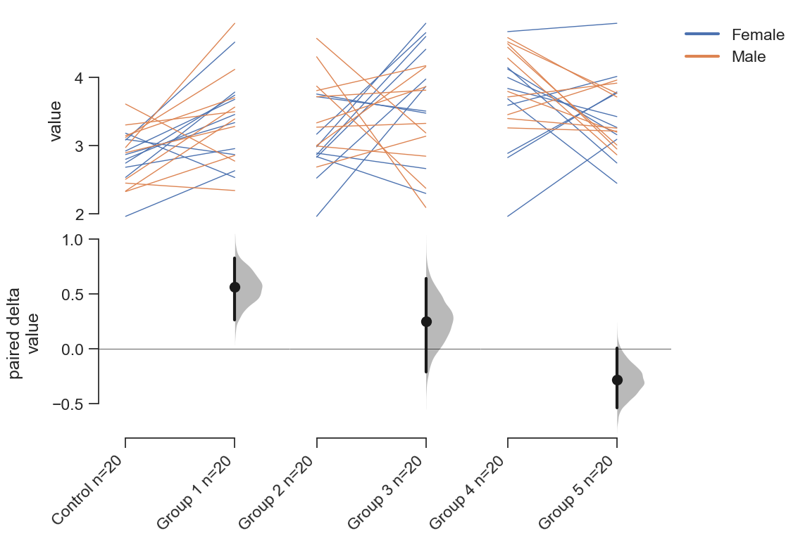
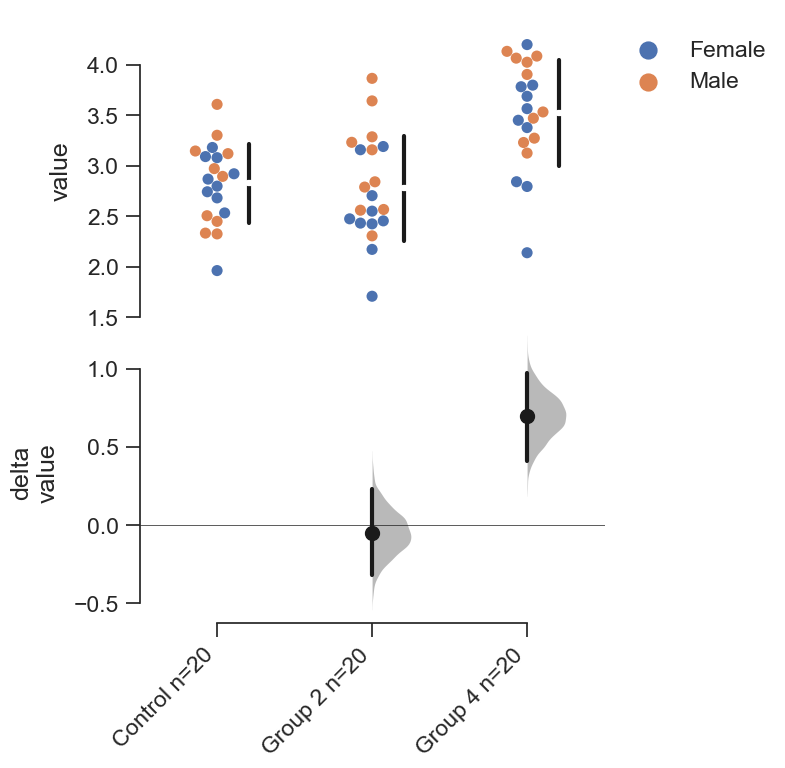
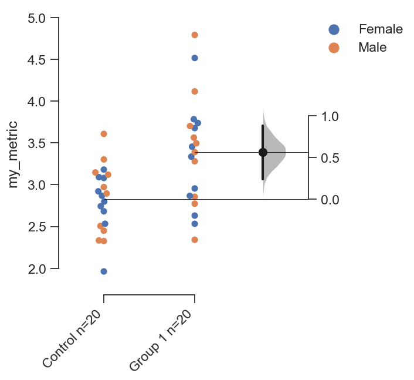

Create dummy dataset
Here, we create a dummy dataset to illustrate how dabest functions.
In this dataset, each column corresponds to a group of observations, and
each row is simply an index number referring to an observation.
This is known as a ‘wide’ dataset. See this
writeup
for more details.
1
2
3
4
5
6
7
8
9
10
11
12
13
14
15
16
17
18
19
20
21
22
23
24
25
26
27
28
29
30
31
32
33
34
35
36
37
38
39
40
41
42
43
44 | from scipy.stats import norm # Used in generation of populations.
np.random.seed(9999) # Fix the seed so the results are replicable.
pop_size = 10000 # Size of each population.
Ns = 20 # The number of samples taken from each population
# Create populations
pop1 = norm.rvs(loc=3, scale=0.4, size=pop_size)
pop2 = norm.rvs(loc=3.5, scale=0.5, size=pop_size)
pop3 = norm.rvs(loc=2.5, scale=0.6, size=pop_size)
pop4 = norm.rvs(loc=3, scale=0.75, size=pop_size)
pop5 = norm.rvs(loc=3.5, scale=0.75, size=pop_size)
pop6 = norm.rvs(loc=3.25, scale=0.4, size=pop_size)
# Sample from the populations
sampling_kwargs = dict(size=Ns, replace=False)
g1 = np.random.choice(pop1, **sampling_kwargs)
g2 = np.random.choice(pop2, **sampling_kwargs)
g3 = np.random.choice(pop3, **sampling_kwargs)
g4 = np.random.choice(pop4, **sampling_kwargs)
g5 = np.random.choice(pop5, **sampling_kwargs)
g6 = np.random.choice(pop6, **sampling_kwargs)
# Add a `gender` column for coloring the data.
females = np.repeat('Female', Ns/2).tolist()
males = np.repeat('Male', Ns/2).tolist()
gender = females + males
# Add an `id` column for paired data plotting.
# More info below!
id_col = pd.Series(range(1, Ns+1))
# Combine samples and gender into a DataFrame.
df = pd.DataFrame({'Control' : g1,
'Group 1' : g2,
'Group 2' : g3,
'Group 3' : g4,
'Group 4' : g5,
'Group 5' : g6,
'Gender' : gender,
'ID' : id_col
})
|
Note that we have 6 groups of observations, with an additional
non-numerical column indicating gender, and a column indicating the
identity of each observation.
|
Control |
Group 1 |
Group 2 |
Group 3 |
Group 4 |
Group 5 |
Gender |
ID |
| 0 |
2.742313 |
3.737751 |
2.703766 |
3.933794 |
2.138557 |
2.997997 |
Female |
1 |
| 1 |
2.681590 |
2.954575 |
3.158262 |
2.983600 |
3.377651 |
3.699350 |
Female |
2 |
| 2 |
3.180724 |
2.531722 |
2.474184 |
2.286611 |
3.450214 |
2.507875 |
Female |
3 |
| 3 |
1.961873 |
2.629912 |
2.431826 |
1.985591 |
3.565215 |
3.251389 |
Female |
4 |
| 4 |
2.867556 |
3.335618 |
2.454033 |
3.887869 |
2.841621 |
3.513511 |
Female |
5 |
Producing Plots
Independant two-group estimation plot
The simplest estimation plot can be generated with dabest.plot().
Supply the DataFrame; supply the two groups you want to compare in the
idx argument as a tuple or list.
fig1, results1 = dabest.plot(df, idx=('Control','Group 1'))

The dabest.plot() function will return 2 objects: a matplotlib
Figure and a pandas DataFrame.
In the Jupyter Notebook, with %matplotlib inline, the figure should
automatically appear.
dabest.plot() will automatically drop any NaNs in the data. Note how
the Ns (appended to the group names in the xtick labels) indicate the
number of datapoints being plotted, and used to calculate the contrasts.
The pandas DataFrame returned by dabest.plot() contains the
statistics computed in the course of generating the plot, with
confidence intervals (95% by default) and relevant p-values.
| # prints out the DataFrame returned by `dabest.plot()`.
results1
|
|
reference_group |
experimental_group |
stat_summary |
bca_ci_low |
bca_ci_high |
ci |
is_difference |
is_paired |
pvalue_2samp_ind_ttest |
pvalue_mann_whitney |
| 0 |
Control |
Group 1 |
0.564092 |
0.251295 |
0.900291 |
95.0 |
True |
False |
0.001811 |
0.004703 |
You can color the dots with any column in the DataFrame, using the
color_col keyword.
| f2, results2 = dabest.plot(df, idx=('Control','Group 1'),
color_col='Gender')
|

Paired two-group estimation plot
DABEST can also produce estimation plots for paired observations
(repeated measures). This is done by setting the paired option to
True. You will also have to tell dabest.plot() which column
contains the identity of the each datum with the id_col keyword.
The estimation plot uses lines to indicate the pairs of observations.
This is known as a slopegraph. The combined visual effect of the slopes
of these lines serves to give the viewer an intuitive sense of the effect
size between the two groups of repeated observations.
| f3, results3 = dabest.plot(df, idx=('Control','Group 1'),
color_col='Gender',
paired=True, id_col="ID")
|

Note that the statistical output records that the difference is a paired
one, in the is_paired column.
|
reference_group |
experimental_group |
stat_summary |
bca_ci_low |
bca_ci_high |
ci |
is_difference |
is_paired |
pvalue_2samp_paired_ttest |
pvalue_wilcoxon |
| 0 |
Control |
Group 1 |
0.564092 |
0.262493 |
0.842903 |
95.0 |
True |
True |
0.001285 |
0.003185 |
If you want to plot the raw swarmplot instead of the paired lines, use
the show_pairs flag to set this. The contrasts computed will still
be paired, as indicated by the DataFrame produced.
| f4, results4 = dabest.plot(df, idx=('Control','Group 1'),
color_col='Gender',
paired=True, id_col="ID",
show_pairs=False)
|

Multi two-group estimation plot
In a multi-group design, you can horizontally tile two or more two-group
floating-contrasts. This is designed to meet data visualization and
presentation paradigms that are predominant in academic biomedical
research, where several two-group experiments are presented together.
This is done mainly through the idx option. You can nest two or more
tuples or lists within a single tuple/list to create a seperate subplot
for that contrast.
The effect sizes and confidence intervals for each two-group plot will
be computed.
| f5, results5 = dabest.plot(df, idx=(('Control','Group 1'),
('Group 2','Group 3'),
('Group 4','Group 5'))
)
results5
|
|
reference_group |
experimental_group |
stat_summary |
bca_ci_low |
bca_ci_high |
ci |
is_difference |
is_paired |
pvalue_2samp_ind_ttest |
pvalue_mann_whitney |
| 0 |
Control |
Group 1 |
0.564092 |
0.256753 |
0.892652 |
95.0 |
True |
False |
0.001811 |
0.004703 |
| 1 |
Group 2 |
Group 3 |
0.253319 |
-0.112335 |
0.616018 |
95.0 |
True |
False |
0.190823 |
0.155570 |
| 2 |
Group 4 |
Group 5 |
-0.278511 |
-0.551978 |
0.019770 |
95.0 |
True |
False |
0.070806 |
0.041124 |

Each two-group experiment has its own floating contrast axes. Another
way to present this is to place all the effect sizes (and their
bootstrap distributions) on a common axes, beneath the raw data. This is
controlled with the float_contrast option.
| f6, results6 = dabest.plot(df, idx=(('Control','Group 1'),
('Group 2','Group 3'),
('Group 4','Group 5')),
float_contrast=False
)
|

| f6_paired, results6_paired = dabest.plot(df, idx=(('Control','Group 1'),
('Group 2','Group 3'),
('Group 4','Group 5')),
float_contrast=False,
color_col='Gender',
paired=True, id_col='ID'
)
|

Shared-control estimation plot
A common experimental setup seen in contemporary biomedical research is
a shared-control design (also known as a ‘hub-and-spoke’ design), where
two or more experimental groups are compared to a common control group.
A hub-and-spoke plot implements estimation statistics and aesthetics on
such an experimental design.
If more than 2 columns/groups are directly passed to idx, then
dabest.plot() will produce a shared-control estimation plot, where
the first group in the tuple/list is considered the control group. The
mean difference and confidence intervals of each subsequent group will
be computed against the first control group.
| f7, results7 = dabest.plot(df, idx=('Control', 'Group 2', 'Group 4'),
color_col='Gender')
results7
|
|
reference_group |
experimental_group |
stat_summary |
bca_ci_low |
bca_ci_high |
ci |
is_difference |
is_paired |
pvalue_2samp_ind_ttest |
pvalue_mann_whitney |
| 0 |
Control |
Group 2 |
-0.049862 |
-0.318671 |
0.231657 |
95.0 |
True |
False |
0.734693 |
0.714980 |
| 1 |
Control |
Group 4 |
0.698509 |
0.409364 |
0.969665 |
95.0 |
True |
False |
0.000028 |
0.000093 |

In a shared control plot, the effect sizes and bootstrap 95CIs are shown
on the lower panel for all comparisons. By default, a summary line is
plotted for each group. The mean (indicated by the gap) and the standard
deviation is plotted as a gapped line.
One can display the median with the 25th and 75th percentiles (a
Tufte-style boxplot) using the group_summaries keyword argument in
the function.
| f8, results8 = dabest.plot(df, idx=('Control', 'Group 2', 'Group 4'),
color_col='Gender',
group_summaries='median_quartiles')
|

Appendix: On working with ‘melted’ DataFrames.
dabest.plot can also work with ‘melted’ or ‘longform’ data. This
term is so used because each row will now correspond to a single
datapoint, with one column carrying the value (value) and other
columns carrying ‘metadata’ describing that datapoint (in this case,
group and Gender).
For more details on wide vs long or ‘melted’ data, see
https://en.wikipedia.org/wiki/Wide_and_narrow_data
To read more about melting a dataframe,see
https://pandas.pydata.org/pandas-docs/stable/generated/pandas.melt.html
1
2
3
4
5
6
7
8
9
10
11
12 | x='group'
y='my_metric'
color_col='Gender'
value_cols = df.columns[:-2] # select all but the 'Gender' and 'ID' columns.
df_melt=pd.melt(df,
id_vars=['ID',color_col],
value_vars=value_cols,
value_name=y,
var_name=x)
df_melt.head() # Gives the first five rows of `df_melt`.
|
|
ID |
Gender |
group |
my_metric |
| 0 |
1 |
Female |
Control |
2.742313 |
| 1 |
2 |
Female |
Control |
2.681590 |
| 2 |
3 |
Female |
Control |
3.180724 |
| 3 |
4 |
Female |
Control |
1.961873 |
| 4 |
5 |
Female |
Control |
2.867556 |
If you are using a melted DataFrame, you will need to specify the x
(containing the categorical group names) and y (containing the
numerical values for plotting) columns.
| f17, results17 = dabest.plot(df_melt,
x='group',
y='my_metric',
idx=('Control','Group 1'),
color_col='Gender'
)
results17
|
|
reference_group |
experimental_group |
stat_summary |
bca_ci_low |
bca_ci_high |
ci |
is_difference |
is_paired |
pvalue_2samp_ind_ttest |
pvalue_mann_whitney |
| 0 |
Control |
Group 1 |
0.564092 |
0.244049 |
0.881805 |
95.0 |
True |
False |
0.001811 |
0.004703 |
